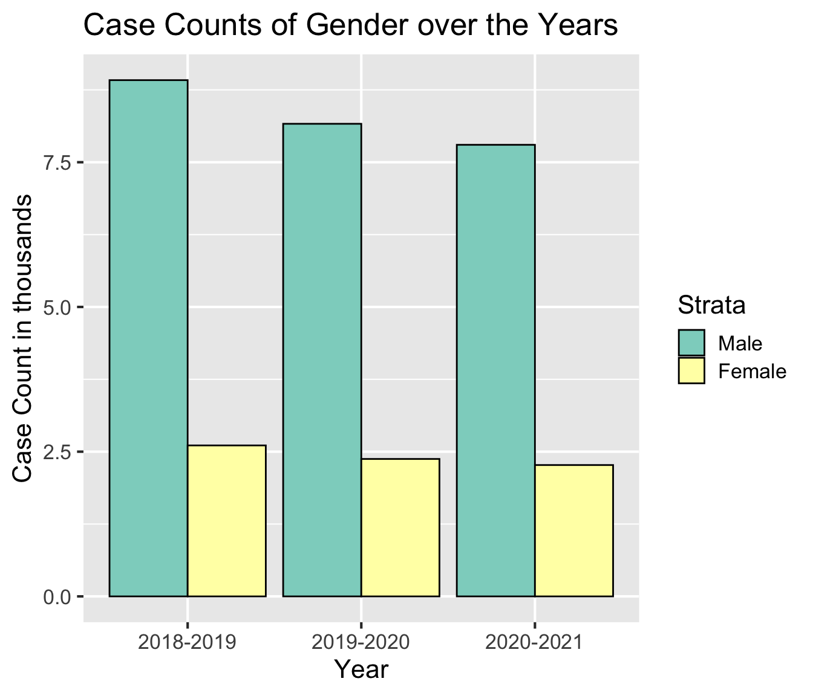
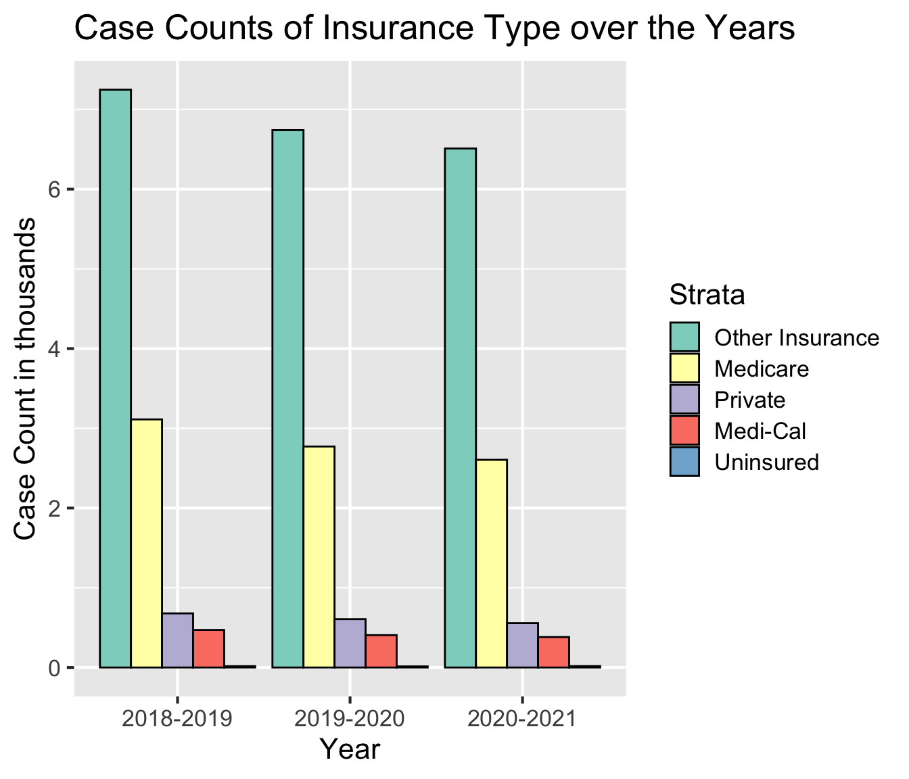
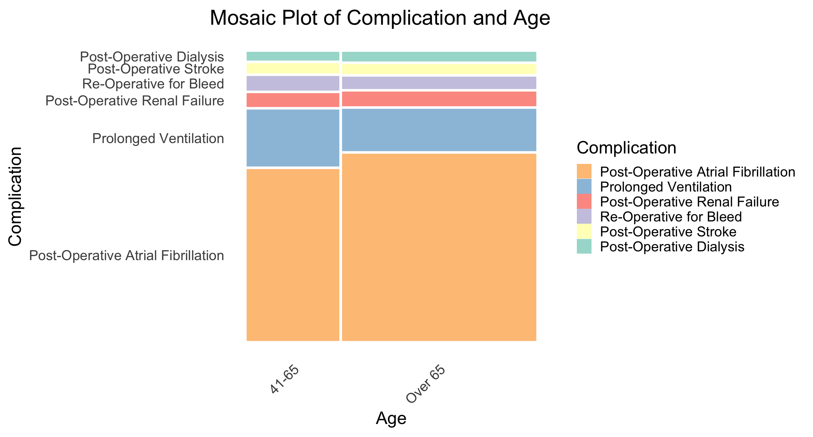
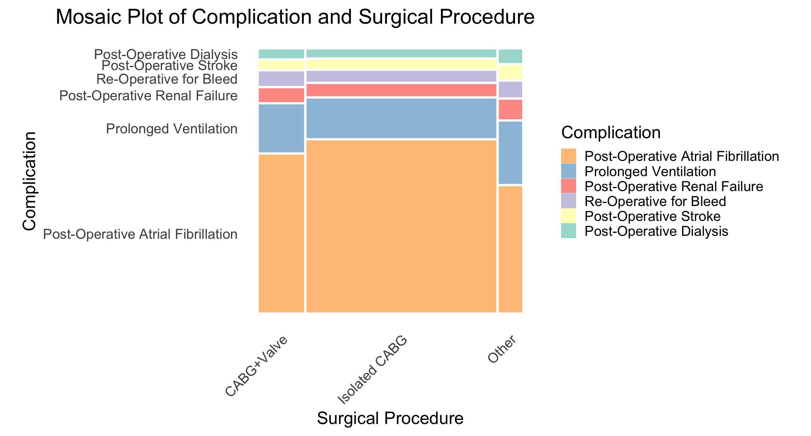

Code
cab_counts = cab %>% filter(!(Strata %in% c('Under 40', 'Uninsured', 'Native', 'Others', 'Pacific'))) %>% arrange(Year, complication)cab_counts = cab %>% filter(!(Strata %in% c('Under 40', 'Uninsured', 'Native', 'Others', 'Pacific'))) %>% arrange(Year, complication)p="Set3"complication_counts = cab_counts %>% group_by(Year, complication) %>% summarise(Freq=sum(Count)) %>% arrange(Year, desc(Freq)) %>% mutate(complication=factor(complication, levels = unique(complication)))
readmission_counts = cab_counts %>% group_by(Year, readmission) %>% summarise(Freq=sum(Count))
strata_counts = cab_counts %>% group_by(Year, category, Strata) %>% summarise(Freq=sum(Count)) %>% subset(category != "All") ggplot(complication_counts, aes(x=Year, y=Freq, fill=complication)) +
geom_bar(color="black", stat='identity', position='dodge') +
scale_fill_brewer(palette=p) +
theme_gray(16)+
labs(title="Counts of Complications over the Years", y="Count")We can see that one complication Post-operative Atrial Fibrillation is by far the most common complication.
ggplot(complication_counts, aes(x=Year, y=log10(Freq), fill=complication)) +
geom_bar(color="black", stat='identity', position='dodge') +
scale_fill_brewer(palette=p) +
theme_gray(16)+
labs(title="Log Counts of Complications over the Years", y="Log Count")Deep Sternal Infection and Reintervention for Myocardial Ischemia are much lower in frequency than the rest of the strata for the Complications category. In the log bar plot, we can see that they are an entire order of magnitude less than the others. For the purposes of our analysis, we have removed them.
cab_counts = cab_counts %>% filter(!(complication %in% c('Deep Sternal Infection', 'Reintervention for Myocardial Ischemia'))) %>% arrange(Year, complication)
complication_counts = cab_counts %>% group_by(Year, complication) %>% summarise(Freq=sum(Count)) %>% arrange(Year, desc(Freq)) %>% mutate(complication=factor(complication, levels = unique(complication)))
readmission_counts = cab_counts %>% group_by(Year, readmission) %>% summarise(Freq=sum(Count))
strata_counts = cab_counts %>% group_by(Year, category, Strata) %>% summarise(Freq=sum(Count)) %>% subset(category != "All") ggplot(readmission_counts, aes(x=Year, y=Freq, fill=readmission)) +
geom_bar(color="black", stat='identity', position='dodge') +
scale_fill_brewer(palette=p) +
theme_gray(16)+
labs(title="Counts of Readmissions over the Years", y="Count")
We can see from this plot that the proportion of readmissions and non-readmissions stays relatively each year. However, we can again observe that the number of complications overall seems to decrease over time.
for (c in unique(strata_counts$category)) {
if (c == "Age"){
print(ggplot(strata_counts %>% subset(category == c), aes(x=Year, y=Freq, fill=Strata)) +
geom_bar(color="black", stat='identity', position='dodge') +
scale_fill_brewer(c, palette=p) +
labs(title=paste(paste("Counts of", c), "over the Years"), y="Count") +
theme_gray(16)+
theme(axis.text.x = element_text(angle = 45, hjust = 1)))
}else{
print(ggplot(strata_counts %>% subset(category == c) %>% arrange(Year, desc(Freq)) %>% mutate(Strata = factor(Strata, levels=unique(Strata))), aes(x=Year, y=Freq, fill=Strata)) +
geom_bar(color="black", stat='identity', position='dodge') +
scale_fill_brewer(c, palette=p) +
labs(title=paste(paste("Counts of", c), "over the Years"), y="Count") +
theme_gray(16)+
theme(axis.text.x = element_text(angle = 45, hjust = 1)))
}
}


We can see that over the years the counts for readmission as well as the counts for complications, readmissions, and demographics/medical information all stay relatively consistent over the three year period with some slight decline for some strata in categories like Race and Gender.
ggplot(complication_counts %>% group_by(Year, complication) %>% summarize(Freq=sum(Freq)) %>% mutate(complication=factor(complication)), aes(x=complication, y=Freq, fill=complication)) +
geom_bar(color="black", stat="identity") +
facet_wrap(~ Year, scales = "free") +
scale_fill_brewer(palette=p) +
labs(x="Complication", y="Count", title="Counts for Complications") +
guides(fill="none")+
theme_gray(16)+
theme(axis.text.x = element_text(angle = 45, hjust = 1), plot.margin = unit(c(0, 0, 0, 2), "cm"))comp_read_counts = cab_counts %>% subset(category=="All") %>% arrange(Year, desc(Yes)) %>% mutate(complication=factor(complication, levels = unique(complication)))
ggplot(comp_read_counts, aes(x = complication, y = Yes, fill = readmission)) +
geom_bar(color="black", stat = "identity", position = "dodge") +
facet_wrap(~ Year, scales = "free") +
scale_fill_brewer(palette=p) +
labs(x = "Complication", y = "Count", fill = "Readmission") +
ggtitle("Complication Readmission Rates") +
theme_gray(16)+
theme(axis.text.x = element_text(angle = 45, hjust = 1),plot.margin = unit(c(0, 0, 0, 3), "cm"))library(forcats)
neworder = c("Post-Operative Atrial Fibrillation","Prolonged Ventilation","Post-Operative Renal Failure","Re-Operative for Bleed","Post-Operative Stroke","Post-Operative Dialysis" )
age_counts = cab_counts %>% subset(category == "Age") %>% group_by(complication, Strata) %>% summarize(Freq = sum(Count)) %>% rename(Complication = complication, Age = Strata) %>% mutate(Age=factor(Age)) %>% arrange(Age, desc(Freq)) %>% mutate(Complication=factor(Complication, levels = unique(Complication))) %>% uncount(weights = Freq)
#Fixing order of the horizontal cuts
age_counts$Complication = factor(age_counts$Complication)
age_counts$Complication = fct_relevel(age_counts$Complication, neworder)
cabg_counts = cab_counts %>% subset(category == "Surgical Procedure") %>% group_by(complication, Strata) %>% summarize(Freq = sum(Count)) %>% rename(Complication = complication, Surgical.Procedure = Strata) %>% mutate(Surgical.Procedure=factor(Surgical.Procedure)) %>% uncount(weights = Freq)
cabg_counts$Complication = factor(cabg_counts$Complication)
cabg_counts$Complication = fct_relevel(cabg_counts$Complication, neworder)
gender_counts = cab_counts %>% subset(category == "Gender") %>% group_by(complication, Strata) %>% summarize(Freq = sum(Count)) %>% rename(Complication = complication, Gender = Strata) %>% mutate(Gender=factor(Gender)) %>% uncount(weights = Freq)
gender_counts$Complication = factor(gender_counts$Complication)
gender_counts$Complication = fct_relevel(gender_counts$Complication, neworder)
pay_counts = cab_counts %>% subset(category == "Insurance Type") %>% group_by(complication, Strata) %>% summarize(Freq = sum(Count)) %>% rename(Complication = complication, Insurance.Type = Strata) %>% mutate(Insurance.Type =factor(Insurance.Type)) %>% uncount(weights = Freq)
pay_counts$Complication = factor(pay_counts$Complication)
pay_counts$Complication = fct_relevel(pay_counts$Complication, neworder)
race_counts = cab_counts %>% subset(category == "Race") %>% group_by(complication, Strata) %>% summarize(Freq = sum(Count)) %>% rename(Complication = complication, Race = Strata) %>% mutate(Race=factor(Race)) %>% uncount(weights = Freq)
race_counts$Complication = factor(race_counts$Complication)
race_counts$Complication = fct_relevel(race_counts$Complication, neworder)ggplot(age_counts) +
geom_mosaic(aes(x=product(Age), fill = Complication)) +
scale_fill_brewer(palette=p, direction = -1) +
labs(title = "Mosaic Plot of Complication and Age")+
theme_minimal(20) +
theme(axis.text.x = element_text(angle = 45, hjust=1),plot.title = element_text(hjust =1), aspect.ratio = 1, axis.ticks.x=element_blank(), line = element_blank(), axis.ticks.y=element_blank())Warning: `unite_()` was deprecated in tidyr 1.2.0.
ℹ Please use `unite()` instead.
ℹ The deprecated feature was likely used in the ggmosaic package.
Please report the issue at <https://github.com/haleyjeppson/ggmosaic>.
ggplot(cabg_counts) +
geom_mosaic(aes(x=product(Surgical.Procedure), fill = Complication)) +
scale_fill_brewer(palette=p, direction = -1) +
theme_minimal(20) +
labs(x="Surgical Procedure",title="Mosaic Plot of Complication and Surgical Procedure")+
theme(axis.text.x = element_text(angle = 45, hjust=1), plot.title = element_text(hjust =1), aspect.ratio = 1, axis.ticks.x=element_blank(), line = element_blank(), axis.ticks.y=element_blank())
ggplot(gender_counts) +
geom_mosaic(aes(x=product(Gender), fill = Complication)) +
scale_fill_brewer(palette=p, direction = -1) +
theme_minimal(20) +
labs(title = "Mosaic Plot of Complication and Gender")+
theme(axis.text.x = element_text(angle = 45, hjust=1), plot.title = element_text(hjust =1), aspect.ratio = 1, axis.ticks.x=element_blank(), line = element_blank(), axis.ticks.y=element_blank())
ggplot(pay_counts) +
geom_mosaic(aes(x=product(Insurance.Type), fill = Complication)) +
scale_fill_brewer(palette=p, direction = -1) +
theme_minimal(20) +
labs(title = "Mosaic Plot of Complication and Insurance Type")+
theme(axis.text.x = element_text(angle = 45, hjust=1), plot.title = element_text(hjust =1), aspect.ratio = 1, axis.ticks.x=element_blank(), line = element_blank(), axis.ticks.y=element_blank())ggplot(race_counts) +
geom_mosaic(aes(x=product(Race), fill = Complication)) +
scale_fill_brewer(palette=p, direction = -1) +
theme_minimal(20) +
labs(title="Mosaic Plot of Complication and Race")+
theme(axis.text.x = element_text(angle = 45, hjust=1), aspect.ratio = 1,plot.title = element_text(hjust =1), axis.ticks.x=element_blank(), line = element_blank(), axis.ticks.y=element_blank())age_read_counts = cab_counts %>% subset(category == "Age") %>% group_by(readmission, Strata) %>% summarize(Freq = sum(Count)) %>% rename(Readmission = readmission, Age = Strata) %>% mutate(Age=factor(Age)) %>% uncount(weights = Freq)
cabg_read_counts = cab_counts %>% subset(category == "Surgical Procedure") %>% group_by(readmission, Strata) %>% summarize(Freq = sum(Count)) %>% rename(Readmission = readmission, CABG.Type = Strata) %>% mutate(CABG.Type=factor(CABG.Type)) %>% uncount(weights = Freq)
gender_read_counts = cab_counts %>% subset(category == "Gender") %>% group_by(readmission, Strata) %>% summarize(Freq = sum(Count)) %>% rename(Readmission = readmission, Gender = Strata) %>% mutate(Gender=factor(Gender)) %>% uncount(weights = Freq)
pay_read_counts = cab_counts %>% subset(category == "Insurance Type") %>% group_by(readmission, Strata) %>% summarize(Freq = sum(Count)) %>% rename(Readmission = readmission, PayorType = Strata) %>% mutate(PayorType=factor(PayorType)) %>% uncount(weights = Freq)
race_read_counts = cab_counts %>% subset(category == "Race") %>% group_by(readmission, Strata) %>% summarize(Freq = sum(Count)) %>% rename(Readmission = readmission, Race = Strata) %>% mutate(Race=factor(Race)) %>% uncount(weights = Freq)
ggplot(age_read_counts) +
geom_mosaic(aes(x=product(Readmission, Age), fill = Readmission)) +
labs(title = "Mosaic Plots of CABG Type and Readmission") +
theme_minimal(16) +
theme( aspect.ratio = 1, axis.ticks.x=element_blank(), line = element_blank(), axis.ticks.y=element_blank())cat("----- Age -----\n")----- Age -----test = chisq.test(table(age_read_counts$Readmission, age_read_counts$Age))
cat(paste(paste("Chi Squared Statistic:", round(test$statistic, 4))), "\n")Chi Squared Statistic: 3.6179 cat(paste(paste("p-value:", round(test$p.value, 4))), "\n")p-value: 0.0572 cat(paste("-----------------", "\n"))----------------- ggplot(cabg_read_counts) +
geom_mosaic(aes(x=product(Readmission, CABG.Type), fill = Readmission)) +
labs(title = "Mosaic Plots of CABG Type and Readmission") +
theme_minimal(16) +
theme(axis.text.x = element_text(angle = 45, hjust=1), aspect.ratio = 1, axis.ticks.x=element_blank(), line = element_blank(), axis.ticks.y=element_blank())
cat("----- CABG Type -----\n")----- CABG Type -----test = chisq.test(table(cabg_read_counts$Readmission, cabg_read_counts$CABG.Type))
cat(paste(paste("Chi Squared Statistic:", round(test$statistic, 4))), "\n")Chi Squared Statistic: 117.2364 cat(paste(paste("p-value:", round(test$p.value, 4))), "\n")p-value: 0 cat(paste("-----------------", "\n"))----------------- ggplot(gender_read_counts) +
geom_mosaic(aes(x=product(Readmission, Gender), fill = Readmission)) +
labs(title = "Mosaic Plots of Gender and Readmission") +
theme_minimal(16) +
theme(aspect.ratio = 1, axis.ticks.x=element_blank(), line = element_blank(), axis.ticks.y=element_blank())
cat("----- Gender -----\n")----- Gender -----test = chisq.test(table(gender_read_counts$Readmission, gender_read_counts$Gender))
cat(paste(paste("Chi Squared Statistic:", round(test$statistic, 4))), "\n")Chi Squared Statistic: 205.467 cat(paste(paste("p-value:", round(test$p.value, 4))), "\n")p-value: 0 cat(paste("-----------------", "\n"))----------------- ggplot(pay_read_counts) +
geom_mosaic(aes(x=product(Readmission, PayorType), fill = Readmission)) +
labs(title = "Mosaic Plot of Insurance Type and Readmission") +
theme_minimal(16) +
theme(axis.text.x = element_text(angle = 45, hjust=1), aspect.ratio = 1, axis.ticks.x=element_blank(), line = element_blank(), axis.ticks.y=element_blank(),plot.margin = unit(c(0, 3, 0, 0), "cm"))
cat("----- Insurance Type -----\n")----- Insurance Type -----test = chisq.test(table(pay_read_counts$Readmission, pay_read_counts$PayorType))
cat(paste(paste("Chi Squared Statistic:", round(test$statistic, 4))), "\n")Chi Squared Statistic: 10997.5074 cat(paste(paste("p-value:", round(test$p.value, 4))), "\n")p-value: 0 cat(paste("-----------------", "\n"))----------------- ggplot(race_read_counts) +
geom_mosaic(aes(x=product(Readmission, Race), fill = Readmission)) +
labs(title = "Mosaic Plot of Race and Readmission") +
theme_minimal(16) +
theme(axis.text.x = element_text(angle = 45, hjust=1), aspect.ratio = 1, axis.ticks.x=element_blank(), line = element_blank(), axis.ticks.y=element_blank())
cat("----- Race -----\n")----- Race -----test = chisq.test(table(race_read_counts$Readmission, race_read_counts$Race))
cat(paste(paste("Chi Squared Statistic:", round(test$statistic, 4))), "\n")Chi Squared Statistic: 78.0327 cat(paste(paste("p-value:", round(test$p.value, 4))), "\n")p-value: 0 cat(paste("-----------------", "\n"))----------------- age_comp_read_counts = cab_counts %>% subset(category == "Age") %>% group_by(complication, readmission, Strata) %>% summarize(Freq = sum(Count)) %>% rename(Complication = complication, Readmission = readmission, Age = Strata) %>% mutate(Age=factor(Age)) %>% uncount(weights = Freq)
cabg_comp_read_counts = cab_counts %>% subset(category == "Surgical Procedure") %>% group_by(complication, readmission, Strata) %>% summarize(Freq = sum(Count)) %>% rename(Complication = complication, Readmission = readmission, CABG.Type = Strata) %>% mutate(CABG.Type=factor(CABG.Type)) %>% uncount(weights = Freq)
gender_comp_read_counts = cab_counts %>% subset(category == "Gender") %>% group_by(complication, readmission, Strata) %>% summarize(Freq = sum(Count)) %>% rename(Complication = complication, Readmission = readmission, Gender = Strata) %>% mutate(Gender=factor(Gender)) %>% uncount(weights = Freq)
pay_comp_read_counts = cab_counts %>% subset(category == "Insurance Type") %>% group_by(complication, readmission, Strata) %>% summarize(Freq = sum(Count)) %>% rename(Complication = complication, Readmission = readmission, PayorType = Strata) %>% mutate(PayorType=factor(PayorType)) %>% uncount(weights = Freq)
race_comp_read_counts = cab_counts %>% subset(category == "Race") %>% group_by(complication, readmission, Strata) %>% summarize(Freq = sum(Count)) %>% rename(Complication = complication, Readmission = readmission, Race = Strata) %>% mutate(Race=factor(Race)) %>% uncount(weights = Freq)
ggplot(age_comp_read_counts) +
geom_mosaic(aes(x=product(Readmission, Age), fill = Readmission)) +
facet_wrap(~Complication) +
labs(title = "Mosaic Plot of Age and Readmission for Each Complication") +
theme(aspect.ratio = 1, axis.ticks.x=element_blank(), line = element_blank(), axis.ticks.y=element_blank())cat("----- Age -----\n")----- Age -----for (complication in unique(age_comp_read_counts$Complication)){
cat(paste(complication, "\n"))
test = chisq.test(table(age_comp_read_counts$Readmission, age_comp_read_counts$Age, age_comp_read_counts$Complication)[, , complication])
cat(paste(paste("Chi Squared Statistic:", round(test$statistic, 4))), "\n")
cat(paste(paste("p-value:", round(test$p.value, 4))), "\n")
cat(paste("-----------------", "\n"))
}Post-Operative Atrial Fibrillation
Chi Squared Statistic: 13.5689
p-value: 2e-04
-----------------
Post-Operative Dialysis
Chi Squared Statistic: 5.7033
p-value: 0.0169
-----------------
Post-Operative Renal Failure
Chi Squared Statistic: 0.0023
p-value: 0.9615
-----------------
Post-Operative Stroke
Chi Squared Statistic: 0.002
p-value: 0.964
-----------------
Prolonged Ventilation
Chi Squared Statistic: 0.0036
p-value: 0.9522
-----------------
Re-Operative for Bleed
Chi Squared Statistic: 3.1566
p-value: 0.0756
----------------- ggplot(cabg_comp_read_counts) +
geom_mosaic(aes(x=product(Readmission, CABG.Type), fill = Readmission)) +
facet_wrap(~Complication) +
labs(title = "Mosaic Plot of CABG Type and Readmission for Each Complication") +
theme(axis.text.x = element_text(angle = 45, hjust=1), aspect.ratio = 1, axis.ticks.x=element_blank(), line = element_blank(), axis.ticks.y=element_blank())
cat("----- CABG Type -----\n")----- CABG Type -----for (complication in unique(cabg_comp_read_counts$Complication)){
cat(paste(complication, "\n"))
test = chisq.test(table(cabg_comp_read_counts$Readmission, cabg_comp_read_counts$CABG.Type, cabg_comp_read_counts$Complication)[, , complication])
cat(paste(paste("Chi Squared Statistic:", round(test$statistic, 4))), "\n")
cat(paste(paste("p-value:", round(test$p.value, 4))), "\n")
cat(paste("-----------------", "\n"))
}Post-Operative Atrial Fibrillation
Chi Squared Statistic: 57.5318
p-value: 0
-----------------
Post-Operative Dialysis
Chi Squared Statistic: 1.3322
p-value: 0.5137
-----------------
Post-Operative Renal Failure
Chi Squared Statistic: 4.3848
p-value: 0.1116
-----------------
Post-Operative Stroke
Chi Squared Statistic: 2.4665
p-value: 0.2913
-----------------
Prolonged Ventilation
Chi Squared Statistic: 14.2171
p-value: 8e-04
-----------------
Re-Operative for Bleed
Chi Squared Statistic: 9.7124
p-value: 0.0078
----------------- ggplot(gender_comp_read_counts) +
geom_mosaic(aes(x=product(Readmission, Gender), fill = Readmission)) +
facet_wrap(~Complication) +
labs(title = "Mosaic Plot of Gender and Readmission for Each Complication") +
theme(aspect.ratio = 1, axis.ticks.x=element_blank(), line = element_blank(), axis.ticks.y=element_blank())
cat("----- Gender -----\n")----- Gender -----for (complication in unique(gender_comp_read_counts$Complication)){
cat(paste(complication, "\n"))
test = chisq.test(table(gender_comp_read_counts$Readmission, gender_comp_read_counts$Gender, gender_comp_read_counts$Complication)[, , complication])
cat(paste(paste("Chi Squared Statistic:", round(test$statistic, 4))), "\n")
cat(paste(paste("p-value:", round(test$p.value, 4))), "\n")
cat(paste("-----------------", "\n"))
}Post-Operative Atrial Fibrillation
Chi Squared Statistic: 117.0435
p-value: 0
-----------------
Post-Operative Dialysis
Chi Squared Statistic: 4.794
p-value: 0.0286
-----------------
Post-Operative Renal Failure
Chi Squared Statistic: 8.76
p-value: 0.0031
-----------------
Post-Operative Stroke
Chi Squared Statistic: 2.8418
p-value: 0.0918
-----------------
Prolonged Ventilation
Chi Squared Statistic: 20.6166
p-value: 0
-----------------
Re-Operative for Bleed
Chi Squared Statistic: 7.0267
p-value: 0.008
----------------- ggplot(pay_comp_read_counts) +
geom_mosaic(aes(x=product(Readmission, PayorType), fill = Readmission)) +
facet_wrap(~Complication) +
labs(title = "Mosaic Plot of Insurance Type and Readmission for Each Complication") +
theme(axis.text.x = element_text(angle = 45, hjust=1), aspect.ratio = 1, axis.ticks.x=element_blank(), line = element_blank(), axis.ticks.y=element_blank())
cat("----- Insurance Type -----\n")----- Insurance Type -----for (complication in unique(pay_comp_read_counts$Complication)){
cat(paste(complication, "\n"))
test = chisq.test(table(pay_comp_read_counts$Readmission, pay_comp_read_counts$PayorType, pay_comp_read_counts$Complication)[, , complication])
cat(paste(paste("Chi Squared Statistic:", round(test$statistic, 4))), "\n")
cat(paste(paste("p-value:", round(test$p.value, 4))), "\n")
cat(paste("-----------------", "\n"))
}Post-Operative Atrial Fibrillation
Chi Squared Statistic: 7444.8242
p-value: 0
-----------------
Post-Operative Dialysis
Chi Squared Statistic: 312.9139
p-value: 0
-----------------
Post-Operative Renal Failure
Chi Squared Statistic: 510.6406
p-value: 0
-----------------
Post-Operative Stroke
Chi Squared Statistic: 325.0059
p-value: 0
-----------------
Prolonged Ventilation
Chi Squared Statistic: 1789.4062
p-value: 0
-----------------
Re-Operative for Bleed
Chi Squared Statistic: 529.2087
p-value: 0
----------------- ggplot(race_comp_read_counts) +
geom_mosaic(aes(x=product(Readmission, Race), fill = Readmission)) +
facet_wrap(~Complication) +
labs(title = "Mosaic Plot of Race and Readmission for Each Complication") +
theme(axis.text.x = element_text(angle = 45), aspect.ratio = 1, axis.ticks.x=element_blank(), line = element_blank(), axis.ticks.y=element_blank())
cat("----- Race -----\n")----- Race -----for (complication in unique(race_comp_read_counts$Complication)){
cat(paste(complication, "\n"))
test = chisq.test(table(race_comp_read_counts$Readmission, race_comp_read_counts$Race, race_comp_read_counts$Complication)[, , complication])
cat(paste(paste("Chi Squared Statistic:", round(test$statistic, 4))), "\n")
cat(paste(paste("p-value:", round(test$p.value, 4))), "\n")
cat(paste("-----------------", "\n"))
}Post-Operative Atrial Fibrillation
Chi Squared Statistic: 25.2347
p-value: 0
-----------------
Post-Operative Dialysis
Chi Squared Statistic: 9.9607
p-value: 0.0189
-----------------
Post-Operative Renal Failure
Chi Squared Statistic: 11.1967
p-value: 0.0107
-----------------
Post-Operative Stroke
Chi Squared Statistic: 7.7891
p-value: 0.0506
-----------------
Prolonged Ventilation
Chi Squared Statistic: 5.0378
p-value: 0.1691
-----------------
Re-Operative for Bleed
Chi Squared Statistic: 3.7467
p-value: 0.2901
-----------------